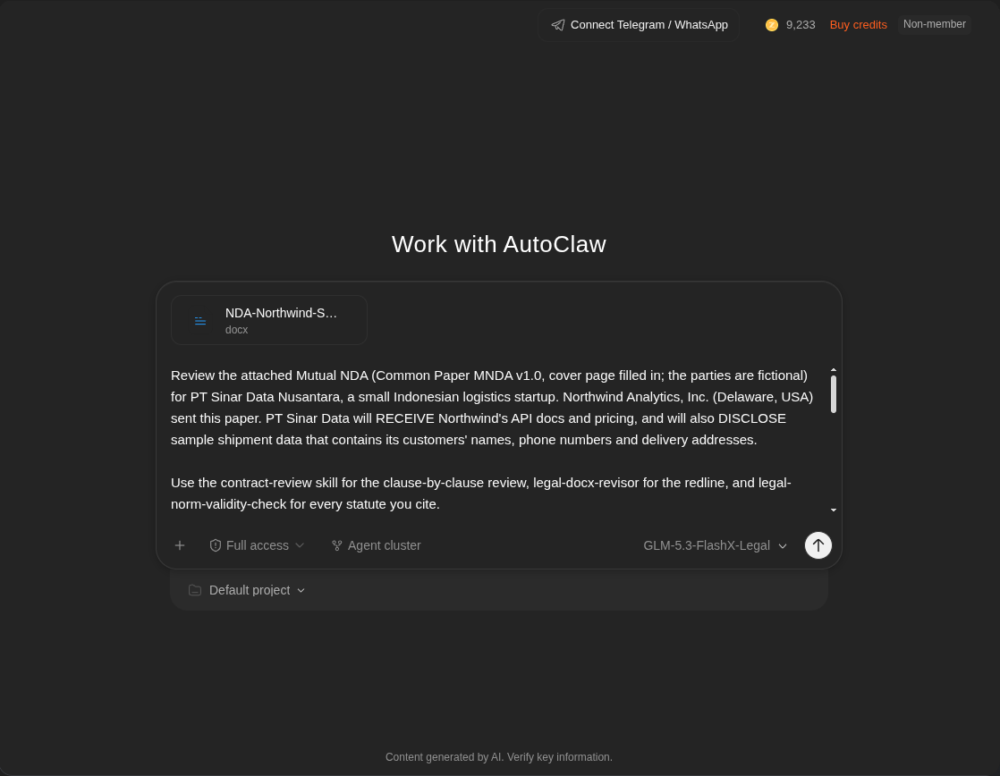
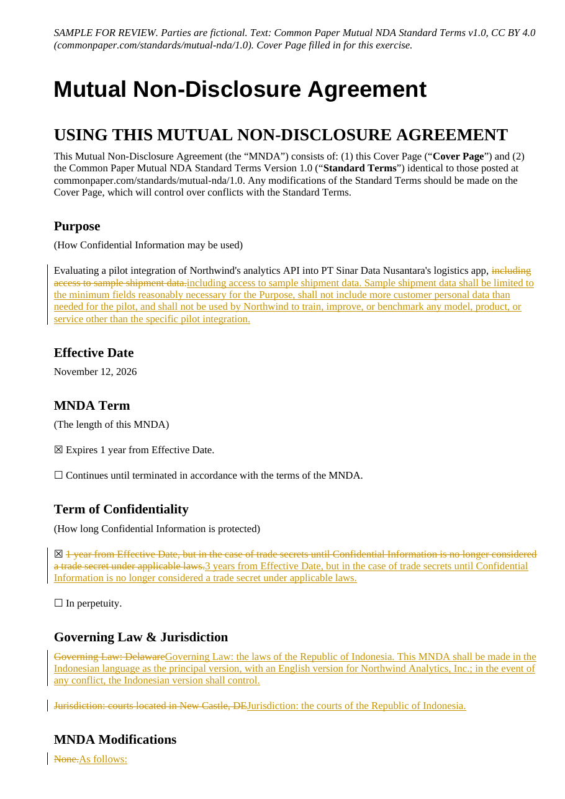
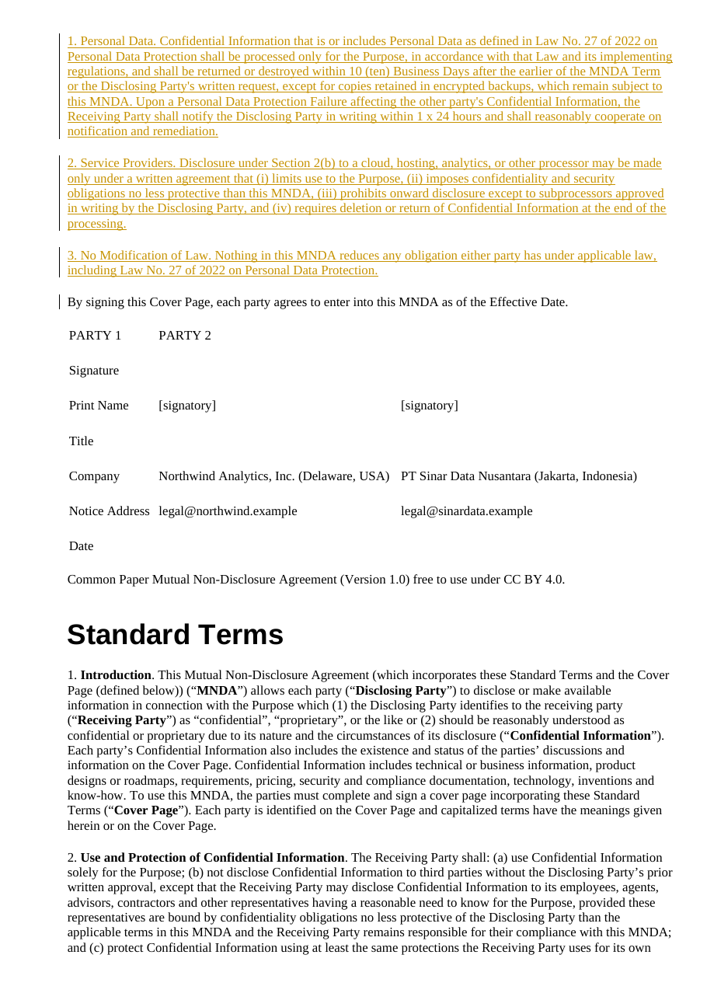
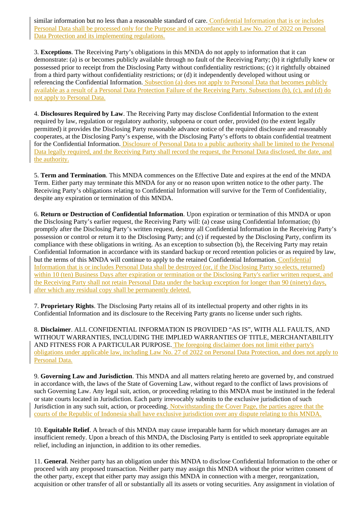
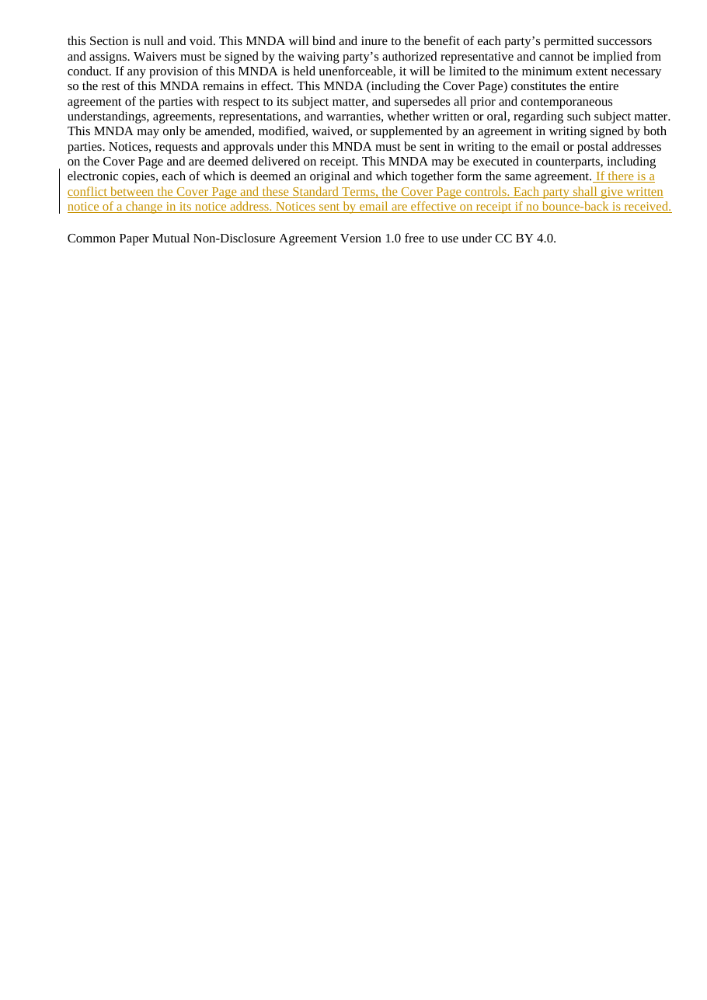

#BuiltWithAutoClaw · Legal Practice
A US NDA, reviewed for an Indonesian startup
AutoClaw (GLM-5.3-FlashX-Legal) turned a Delaware-law NDA into a tracked-changes redline, a 16-issue risk table and a one-page CEO memo — then I checked every quote and every statute it relied on.
1 · Context
The problem. Small Indonesian companies often get US template NDAs: English-only, Delaware law, Delaware courts. Here the startup (PT Sinar Data Nusantara) will receive API docs and pricing, but will also send sample shipment data with customers' names, phones and addresses. A pure trade-secret NDA says nothing about that personal data.
The paper. Common Paper Mutual NDA v1.0 (CC BY 4.0, written by 40+ attorneys), cover page filled in with fictional parties: Northwind Analytics, Inc. (Delaware) ↔ PT Sinar Data Nusantara (Jakarta). No client data was used.
Where it is used. As the negotiation pack a founder sends back before any customer data leaves the building.
2 · Process
- Input — attached the NDA (.docx) and stated who sends what data.
- Model + skills — GLM-5.3-FlashX-Legal with AutoClaw's built-in legal skills
contract-review,legal-docx-revisor,legal-norm-validity-check. - Rule — "quote the NDA exactly, never invent clauses, mark anything you could not verify as UNVERIFIED".
- AutoClaw did — 12 web searches, read 10+ pages (BPK, Constitutional Court, HCCH), wrote the redline and three reports in ~11 minutes.
- I did — re-checked quotes with a script, re-checked every statute with a second researcher, and corrected three pieces of reasoning.

3 · Result
Bottom line for the CEO: do not sign as-is if real customer data will be sent. Five fixes: purpose limit + no model training, a personal-data add-on (UU 27/2022), Indonesian courts, a bilingual text (UU 24/2009 Art. 31), 3-year confidentiality with a real deletion clock.
The redline (tracked changes, 12 comments)








Redline .docxRedline .pdfCEO memoIssue tableSourcesOriginal NDA
All 16 issues
#1HighRevisedCover Page — Purpose: “Evaluating a pilot integration of Northwind’s analytics API into PT Sinar Data Nusantara’s logistics app, including access to sample shipment data.”
My check: Overstated. § 2(a) already limits use "solely for the Purpose". The real gap is no express ban on model training and no data-minimisation, so the added clause is a clarification.
Risk for PT Sinar Data
The Purpose allows unlimited use of that sample data for the pilot. Sample shipment data will include customer names, phone numbers, and delivery addresses (personal data). Nothing stops Northwind from retaining, analyzing beyond the pilot, or using the data to train or improve Northwind models/products.
Proposed wording
Add after that sentence: “Sample shipment data shall be limited to the minimum fields reasonably necessary for the Purpose, shall not include more customer personal data than needed for the pilot, and shall not be used by Northwind to train, improve, or benchmark any model, product, or service other than the specific pilot integration.”
Fallback
If Northwind refuses a full no-train clause, accept “shall not use Personal Data to train or improve any Northwind product or model” and a hard cap on fields (names + city-level address only, no full address/phone if the pilot can run without them).
#2HighRevisedCover Page — Term of Confidentiality: “☒ 1 year from Effective Date, but in the case of trade secrets until Confidential Information is no longer considered a trade secret under applicable laws.”
My check: Conclusion stands (1 year is too short for personal data), but the reasoning is off: after the Term of Confidentiality the duty simply ends; § 3 is not the mechanism.
Risk for PT Sinar Data
The MNDA also expires after 1 year (Cover Page — MNDA Term). Confidentiality dies one year after signing even if the pilot becomes a production integration, and even though the shipment data is customer personal data, not a trade secret. After year 1, Section 3 exceptions can be argued to strip residual protection.
Proposed wording
Replace the checked Term of Confidentiality with: “☒ 3 years from Effective Date, but in the case of trade secrets until Confidential Information is no longer considered a trade secret under applicable laws.”
Fallback
2 years from Effective Date, or 3 years measured from each disclosure (whichever is later). Do not accept 1 year if customer personal data will be sent.
#3HighCover Page — Governing Law: “Governing Law: Delaware”
Risk for PT Sinar Data
Sinar is an Indonesian private company. Law No. 24/2009 Art. 31(1) requires Indonesian in agreements involving an Indonesian private entity; Art. 31(2) requires a second language of the foreign party and/or English. The paper is English-only. Choice of Delaware law is not itself a crime, but an all-English paper is off-side of the language rule (practice: usually not void — SEMA 3/2023 — but it is a real compliance and interpretive risk, and the Constitutional Court in 2025 did not rewrite Art. 31).
Proposed wording
Replace with: “Governing Law: the laws of the Republic of Indonesia. This MNDA shall be made in the Indonesian language as the principal version, with an English version for Northwind Analytics, Inc.; in the event of any conflict, the Indonesian version shall control.”
Fallback
Bilingual Indonesian + English, Indonesian controlling. If Northwind insists on Delaware law, keep bilingual Indonesian/English and require exclusive Indonesian courts (see #4). Do not accept English-only.
#4HighCover Page — Jurisdiction: “Jurisdiction: courts located in New Castle, DE” and Standard Terms § 9: “Each party irrevocably submits to the exclusive jurisdiction of such Jurisdiction in any such …
Risk for PT Sinar Data
Exclusive Delaware courts mean Sinar must sue in the US to protect its own customer data. A Delaware judgment is not directly enforceable in Indonesia: no Indonesia–US Hague 1971/2019 judgment convention; Art. 436(1) Rv generally bars direct enforcement; CMS and Indonesian practice: re-litigate as a fresh claim, with public-order discretion. Injunctions under § 10 are likewise hard to execute here.
Proposed wording
Cover Page: “Jurisdiction: the courts of the Republic of Indonesia.” Plus add at the end of § 9: “Notwithstanding the Cover Page, the parties agree that the courts of the Republic of Indonesia shall have exclusive jurisdiction over any dispute relating to this MNDA.”
Fallback
Split forum: Indonesian courts for any dispute involving Sinar’s customer personal data or Indonesian-law obligations; Delaware courts only for other disputes. Avoid exclusive Delaware courts for everything.
#5HighSILENT — MNDA Modifications: “None.” The Standard Terms never define “personal data,” never mention Law No. 27 of 2022, never mention a personal-data incident, and never require processor terms.
Risk for PT Sinar Data
Sinar is about to disclose personal data of its customers. Common Paper MNDA v1.0 is a pure trade-secret/NDA. PDP Law Art. 2 applies extraterritorially; Art. 56(2) requires the recipient country to have equal or higher protection, or a binding adequate instrument, or subject consent; Art. 46 requires 3×24 hour breach notice to the subject and the authority. The NDA says none of this.
Proposed wording
Replace “None.” with “As follows:” and insert: (1) Personal Data — process only for the Purpose, comply with Law 27/2022 and implementing rules, return/destroy in 10 Business Days, notify the other party within 1×24 hours of a Personal Data Protection Failure affecting its Confidential Information; (2) Service Providers — written processor terms (Purpose-only, no-less-protective security/confidentiality, no onward disclosure without written approval, deletion at end); (3) No Modification of Law — nothing reduces mandatory law, including the PDP Law.
Fallback
If Northwind will not add three cover-page mods, accept a short annex: PDP Law applies; no training on Sinar data; processor flow-down; 1×24 / 3×24 breach notice. Do not send live customer names/phones/addresses without some written personal-data terms.
#6MediumRevisedStandard Terms § 2(b): “except that the Receiving Party may disclose Confidential Information to its employees, agents, advisors, contractors and other representatives having a reasonable need to …
My check: "PP 33/2026: 11 minimum processor clauses" could not be verified (sources conflict). Read as: PP 33/2026 requires a written controller-processor agreement with minimum content.
Risk for PT Sinar Data
Northwind can give Sinar’s customer data to any contractor, cloud host, or “agent” on a simple NDA-level confidentiality clause. PDP Law and PP 33/2026 expect controller–processor terms (PP 33/2026: 11 minimum processor clauses). “Confidentiality no less protective than this MNDA” is not a processor agreement.
Proposed wording
Add to § 2: “Confidential Information that is or includes Personal Data shall be processed only for the Purpose and in accordance with Law No. 27 of 2022 on Personal Data Protection and its implementing regulations.” Plus the Service Providers cover-page modification in #5.
Fallback
Keep § 2(b) as is for ordinary contractors, but require written processor terms before any personal data is shared, and a list of subprocessors.
#7MediumRevisedStandard Terms § 3(a)–(d): obligations “do not apply to information that it can demonstrate: (a) is or becomes publicly available through no fault of the Receiving Party; (b) it rightfully knew or …
My check: Wrong for Northwind's own leak: § 3(a) only applies "through no fault of the Receiving Party". The real risk is a leak through a third party, e.g. Northwind's processor. The carve-out is redundant but harmless.
Risk for PT Sinar Data
If customer data leaks from Northwind and is then posted online, § 3(a) lets Northwind argue it is “publicly available.” If Northwind later obtains similar logistics data from another customer, § 3(c)–(d) can be used to say Sinar’s customer list is not protected. Personal data should not fall out of the NDA this way.
Proposed wording
Add to § 3: “Subsection (a) does not apply to Personal Data that becomes publicly available as a result of a Personal Data Protection Failure of the Receiving Party. Subsections (b), (c), and (d) do not apply to Personal Data.”
Fallback
At minimum carve personal data out of § 3(a) only.
#8LowStandard Terms § 4: “The Receiving Party may disclose Confidential Information to the extent required by law, regulation or regulatory authority, subpoena or court order, provided (to the extent …
Risk for PT Sinar Data
US process (subpoena, discovery, FISA-type requests) can pull Sinar’s customer personal data. Advance notice is already there, but there is no duty to disclose only what is required, and no record-keeping.
Proposed wording
Add to § 4: “Disclosure of Personal Data to a public authority shall be limited to the Personal Data legally required, and the Receiving Party shall record the request, the Personal Data disclosed, the date, and the authority.”
Fallback
Accept as is if #5 (PDP compliance) is accepted; the recording duty can be an internal Northwind obligation in an email.
#9MediumStandard Terms § 6(b) and backup exception: “promptly after the Disclosing Party’s written request, destroy all Confidential Information in the Receiving Party’s possession or control or return it to …
Risk for PT Sinar Data
“Standard backup or record retention policies” is undefined. Northwind can keep customer personal data in backups for years. PDP Law principles require deletion after the retention period (Art. 16(2)(g)).
Proposed wording
Add to § 6: “Confidential Information that is or includes Personal Data shall be destroyed (or, if the Disclosing Party so elects, returned) within 10 (ten) Business Days after expiration or termination or the Disclosing Party’s earlier written request, and the Receiving Party shall not retain Personal Data under the backup exception for longer than 90 (ninety) days, after which any residual copy shall be permanently deleted.”
Fallback
Keep “promptly” and the backup exception, but add an outside date (90 days) for personal data only. Ordinary confidential information can keep the existing backup rule.
#10LowStandard Terms § 8: “ALL CONFIDENTIAL INFORMATION IS PROVIDED “AS IS”, WITH ALL FAULTS, AND WITHOUT WARRANTIES, INCLUDING THE IMPLIED WARRANTIES OF TITLE, MERCHANTABILITY AND FITNESS FOR A PARTICULAR …
Risk for PT Sinar Data
Fine for Northwind’s API docs and pricing. Dangerous if read to excuse Northwind’s security or Sinar’s own disclosure of personal data, or to displace mandatory PDP Law.
Proposed wording
Add: “The foregoing disclaimer does not limit either party’s obligations under applicable law, including Law No. 27 of 2022 on Personal Data Protection, and does not apply to Personal Data.”
Fallback
Accept the AS IS line for non-personal confidential information. Do not accept it as covering customer personal data.
#11LowStandard Terms § 1 (definition): “Confidential Information includes technical or business information, product designs or roadmaps, requirements, pricing, security and compliance documentation, …
Risk for PT Sinar Data
The illustrative list never mentions personal data. A later fight over “is a customer phone number Confidential Information?” is avoidable. Existence of discussions is already included; customer personal data is not.
Proposed wording
Not a rewrite of § 1 (Cover Page mods in #5 already cover this). If Northwind prefers a one-word fix: add “personal data” to the illustrative list.
Fallback
Accept if #5 is agreed. Do not accept silence on personal data and a refusal to add the cover-page mods.
#12LowStandard Terms § 11: “Notices, requests and approvals under this MNDA must be sent in writing to the email or postal addresses on the Cover Page and are deemed delivered on receipt.”
Risk for PT Sinar Data
“On receipt” for email is ambiguous (sent vs. opened vs. no bounce). Cover-page notice addresses are placeholders (legal@…). No duty to update an address.
Proposed wording
Add to § 11: “Each party shall give written notice of a change in its notice address. Notices sent by email are effective on receipt if no bounce-back is received.”
Fallback
Accept as is for a 1-year pilot NDA if the legal@ addresses are live.
#13LowStandard Terms § 5: “Either party may terminate this MNDA for any or no reason upon written notice to the other party.”
Risk for PT Sinar Data
Sinar can lose the API-doc access mid-pilot without cause. That is normal for an MNDA, but if Northwind pulls the plug after Sinar has already sent customer data, § 6 return/destroy (and the backup hole in #9) becomes the only cleanup tool.
Proposed wording
Optional ask, not a must-have: “Either party may terminate this MNDA for any or no reason upon written notice to the other party; provided that if the Receiving Party has received Personal Data, termination shall not shorten the Receiving Party’s confidentiality, security, or return/destruction obligations.”
Fallback
Accept as is. The real protection is #2, #5, and #9, not a termination-for-convenience fix.
#14LowStandard Terms § 2(c): “protect Confidential Information using at least the same protections the Receiving Party uses for its own similar information but no less than a reasonable standard of care.”
Risk for PT Sinar Data
“Reasonable standard of care” is market for an MNDA and is OK. It is not a security schedule (encryption, access control, audit). For a small logistics startup sending real customer PII to a US analytics company, that is a gap, not a drafting error.
Proposed wording
No change to § 2(c) itself. Handle via #5 (PDP) and, if needed, a one-page security note (“personal data at rest encrypted; access limited to named pilot engineers”).
Fallback
Accept § 2(c) as is. Do not let Northwind lower it to “reasonable efforts.”
#15LowStandard Terms § 11 assignment: “except that either party may assign this MNDA in connection with a merger, reorganization, acquisition or other transfer of all or substantially all its assets or …
Risk for PT Sinar Data
Northwind (or its acquirer) can move Sinar’s customer data to a new US (or non-Indonesian) owner without Sinar’s consent. That is a PDP transfer risk under Art. 56 if the new owner is outside Indonesia and the protection drops.
Proposed wording
Optional: “Assignment in connection with a merger, reorganization, acquisition or other transfer is permitted only if the assignee assumes this MNDA in writing and, in the case of Personal Data, the transfer remains compliant with Law No. 27 of 2022.”
Fallback
Accept as is for a 1-year pilot if #5 is agreed; the PDP clause already constrains the assignee.
#16LowStandard Terms § 10: “the Disclosing Party is entitled to seek appropriate equitable relief, including an injunction, in addition to its other remedies.”
Risk for PT Sinar Data
Mutual and useful, but only if Sinar can actually get that relief where Northwind sits — and only if Northwind’s breach of Sinar’s customer data can be stopped quickly. Combined with Delaware exclusive jurisdiction (#4), this clause helps Northwind more than Sinar.
Proposed wording
Keep § 10. Fix the forum (#4) so an injunction is obtainable.
Fallback
Keep as is. Do not delete equitable relief; it protects Sinar too once forum is fixed.
4 · What I verified and what I changed
AutoClaw's own UNVERIFIED marks (Art. 436 Rv exceptions, HIR 227a, the SEMA 3/2023 wording) held up: the second check could not confirm them either. Full table: verify.md · quote checker: verify_quotes.py.
One limit: Perpres 63/2019 Art. 26(4) lets the parties choose the governing language, so "Indonesian controls" is a negotiation ask, not a legal must. The redline keeps it as an ask.
5 · Reuse it
Swap the facts in the first paragraph and run it on your own NDA. The three things that made the output checkable: say who sends what data, name the skills, demand UNVERIFIED instead of guesses.
Review the attached Mutual NDA (Common Paper MNDA v1.0, cover page filled in; the parties are fictional) for PT Sinar Data Nusantara, a small Indonesian logistics startup. Northwind Analytics, Inc. (Delaware, USA) sent this paper. PT Sinar Data will RECEIVE Northwind's API docs and pricing, and will also DISCLOSE sample shipment data that contains its customers' names, phone numbers and delivery addresses. Use the contract-review skill for the clause-by-clause review, legal-docx-revisor for the redline, and legal-norm-validity-check for every statute you cite. Save these files in a new folder named autoclaw-r3-nda in the project: 1. NDA-redline.docx: the attached document with tracked changes and anchored comments. Only touch the clauses you want changed. 2. issues.md: a table with columns: # | section + exact quote from the NDA | risk for PT Sinar Data | severity (High/Medium/Low) | proposed wording | fallback position if Northwind says no. 3. memo.md: a one-page memo for the CEO (not a lawyer): the top 5 risks in plain words, what to ask Northwind for, and what is fine to accept as is. 4. sources.md: every law or rule you rely on (at least check Indonesia Law No. 24 of 2009 on the use of Indonesian language in agreements, Law No. 27 of 2022 on Personal Data Protection, and whether a Delaware court judgment can be enforced in Indonesia), each with the official source URL, the article number, and whether you verified it is current. Mark anything you could not verify as UNVERIFIED instead of guessing. Rules: quote the NDA text exactly and give the section number; do not invent clauses; say clearly where the NDA is silent on something PT Sinar Data needs. When you finish, list the files you created and the three changes that matter most.
Lesson: the redline replaces whole sentences where one word changed — ask for word-level edits if your counterparty reads diffs closely.